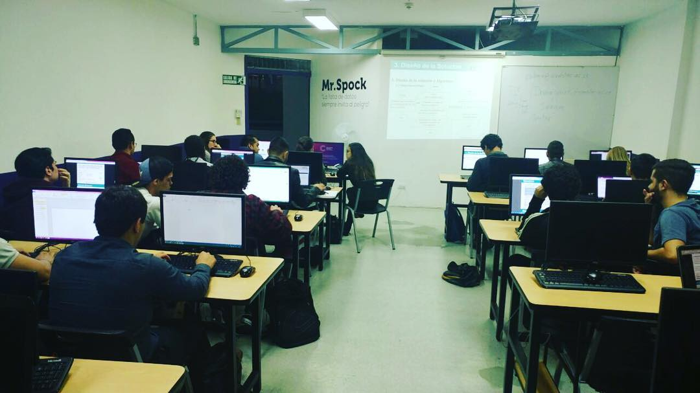

<header>
  <nav class="navbar navbar-default navbar-transparent navbar-fixed-top" id="color">
    <div class="navbar-header">
      <button type="button" class="navbar-toggle" data-toggle="collapse"
                data-target=".navbar-ex1-collapse">
          <span class="sr-only">Desplegar navegación</span>
          <span class="icon-bar"></span>
          <span class="icon-bar"></span>
          <span class="icon-bar"></span>
      </button>   
    </div>
    <div class="collapse navbar-collapse navbar-ex1-collapse">
      <ul class="nav navbar-nav">
        <li><a href="#banner">Inicio</a></li>
        <li><a href="#nosotros">Nosotros</a></li>
        <li><a href="#services">Servicios</a></li>
        <li></li>
        <li><a href="#!/solicitud-proyecto">Proyectos</a></li>
        <li><a href="#!/solicitudEstudiantes">Estudiantes</a></li>
        <li><a href="#!/entrar">Iniciar sesión</a></li>
      </ul>
  </nav>
</header>
<main>
  <section class="col-md-12" id="banner">
    <div class="col-sm-8 col-sm-offset-2 text-center">
      <h2>Cenfotec Software House</h2>
      <p>Haga realidad sus proyectos con nosotros</p>
    </div>
  </section>
  <section id="nosotros">
    <div class="row">
      <div class="col-md-2 col-md-offset-5 text-center">
        <h2>Nosotros</h2>
      </div>
    </div>
    <div class="row">
      <div class="col-md-6" id="description">
        <p>El Cenfotec Software House es un proyecto de emprendimiento académico y profesional dentro de la Universidad Cenfotec, donde los estudiantes de la Universidad brindan servicios a la comunidad, asesorados por profesores expertos en diferentes áreas, con precios muy asequibles.</p>
        <p>Los estudiantes que participan del Cenfotec Software House, son estudiantes que han demostrado un nivel de excelencia mayor, que cuentan con altas habilidades tanto técnicas como blandas y con el deseo de ser parte del equipo.</p>
        <p>Cada equipo de trabajo del Cenfotec Software House, cumple con las etapas y las mejores prácticas, según cada caso. Además , se mantendrá en periódica comunicación con el interesado para validar diferentes aspectos del proyecto.</p>
        <p>El Cenfotec Software House brinda a los estudiantes que trabajan en los proyectos, becas como remuneración a su participación.</p>
      </div>
      <div id="cenfo" class="col-md-6">
        
      </div>
    </div>
  </section>
  <section id="services">
    <div class="row">
      <div class="col-md-2 col-md-offset-5 text-center">
        <h2>Servicios</h2>
      </div>
    </div>
    <div class="row">
      <div class="col-md-4 col-md-offset-2">
        <ul>
          <li>
            <p><span class="fa fa-pencil-square-o"></span>Desarrollo y diseño de prototipos</p>
          </li>
          <li>
            <p><span class="fa fui-html5"></span>Desarrollo y diseño web</p>
          </li>
          <li>
            <p><span class="fa fa-code-fork"></span>Desarrollo de apps</p>
          </li>
          <li>
            <p><span class="fa fa-server"></span>Desarrollo de aplicaciones</p>
          </li>
        </ul>
      </div>
      <div  class="col-md-4">  
      </div>
      <div class="col-md-4">
        <ul>
          <li>
            <p><span class="fa fa-cogs"></span>Pruebas de calidad de software</p>
          </li>
          <li>
            <p><span class="fa fa-list"></span>Confección de requerimientos</p>
          </li>
          <li>
            <p><span class="fa fa-database"></span>Diseño de bases de datos</p>
          </li>
          <li>
            <p><span class="fa fa-rocket"></span>Apoyo en proyectos/ Programa Semilla</p>
          </li>
        </ul>
      </div>
    </div>
  </section>
  <section id="contacto">
    <div class="row">
      <div class="col-md-2 col-md-offset-5">
        <h2>Dirección</h2>
      </div>
    </div>
    <div class="direccion">
      <div class="col-md-4 col-md-offset-2">
        <p><i class="fui-location"></i>Santa Marta, San Pedro de Montes de Oca, del Cruce de la Escuela de Santa Marta 400 metros noreste carretera al Cristo de Sabanilla, San José. Costa Rica.</p>
        <p><i class="fui-chat"></i>softwarehouse@ucenfotec.ac.cr</p>
        <p><i class="fa fa-phone"></i>+506 2281-1555</p>
      </div>

      <div>
        <iframe style="border: 0;" src="https://www.google.com/maps/embed?pb=!1m16!1m12!1m3!1d1965.0058695363427!2d-84.03107!3d9.932979860539223!2m3!1f0!2f0!3f0!3m2!1i1024!2i768!4f13.1!2m1!1suniversidad+cenfotec!5e0!3m2!1ses!2s!4v1396040769596" width="450" height="300" frameborder="0"></iframe>
      </div>
    </div>
    <div>
      
    </div>
  </section>
</main>

<footer>
  <div class="footer-copyright">
    <div class="row">
      <div class="col-sm-2 col-sm-offset-5 text-center">
          <p>Universidad Cenfotec. Derechos reservados 2017</p>

          <p><a href="https://www.geniussoft.net/" id="genius">Genius Soft</a> | 2017</p>
      </div>
    </div>
  </div>
</footer>